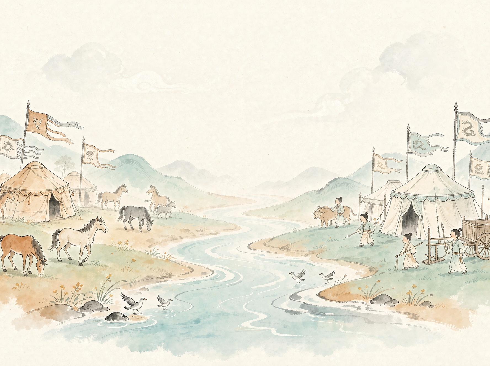

北元魏，分东西
北元魏，分东西：承接上一课「为南朝，都金陵」，转写北朝。
北，指北方；元魏，即北魏，鲜卑拓跋氏所建，孝文帝改姓元，故称元魏；分东西，指北魏末年分裂为东魏、西魏。
北方先由纷乱归于一统，再由一统裂为两半。
对比：为南朝，都金陵 / 北元魏，分东西
南朝四代屡换其姓而不换其都，是同一隅之内的更替；北朝则是一统之后再分，由合转散。一为南方之小定，一为北方之复裂，南北两线各成一对阴阳。
对比前文阴阳太和：北魏曾收拢北方百余年之乱，是局部之合；然六镇之怨、门阀之隔、胡汉之隙俱未调停，故合而复分。合之不和，虽合必分，北方之太和终未成就。
勘破俗见：两类常见偏差。其一，把北魏看作纯粹的异族入主，与华夏文脉无关；其二，以为孝文汉化一味成功，或一味失败。契合般若范式：佛说元魏分东西，即非元魏分东西，是名元魏分东西。国号、姓氏、都邑，皆因缘假名；合与分，是族群、军镇、门阀多重因缘推荡之相。
北方由鲜卑的拓跋氏建立魏朝，后来改姓元，史称北魏。
北魏曾经把北方各地收拢在一处，安稳了一段时日。
后来朝中两派各拥一主，分成东魏和西魏。
把地方并在一起，不等于人心也并在一处；人心不和，合了还会再分。


落到心上理解
南朝倚门阀而立国，故只能守一隅；北方则另有一段因缘——先由部族之力收拢，再因内部隔阂而裂。
疆域、国号、都城，都是器相；安民和众，才是不变之体。北魏合北方之形，而六镇之怨、门阀之隔、胡汉之疑未化，形合而心未合，故一裂为二。合其形者易，和其心者难。
不执「一统」的名相，回看人心是否真在一处，便是无住。
北魏只是异族入主，与华夏文脉无涉
孝文迁都洛阳、改姓易服、行汉制，主动接华夏礼乐
孝文汉化一举成功，北朝从此无事
汉化改上层之门阀，六镇军人之怨反被激化
北魏之分，只因一二人争权
军镇、门阀、胡汉多重积怨叠加，分裂有其深因
- 北方拓跋氏建立魏朝，孝文改姓元，史称元魏（北魏）。
- 北魏曾一统北方，后又分裂为东魏、西魏。
- 把疆域并在一处，不等于人心也并在一处。
- 融合需要时间与耐心，急着改、只顾一头，往往生出新的裂痕。
一、勘俗见。北魏与南朝并非两种毫不相干的历史，孝文改制把北方纳入华夏礼乐，是一段主动的融合。
二、现代对照。两个群体合到一处，若只改了规矩、不改彼此的心，旧怨一遇机会就会裂开。
三、承接常变主线。国号、疆域、政权（可变之相）分合无常；安民和众（常）是不变内核。
四、承接教与学二分。孝文以改姓易服、兴学行礼施教于上，而六镇军人之教未及，教之不遍，合亦不固。
承接选择力练习：明白「合」不止于形式，还要耐心把人心的隔阂一层层化开。
北元魏，分东西
一字义与句读
北：北方。元魏：北魏，鲜卑拓跋氏所建，孝文帝改姓元，故称元魏。分东西：北魏末分裂为东魏、西魏。
全句释义：北方有拓跋氏所建之魏，改姓元，故称元魏；其后分裂为东、西二魏。北魏起三八六年，统一北方在四三九年，分东西在五三四至五三五年间。
二命题考辨
（1）北魏由合而分的两层根源
表层：孝文迁洛之后，六镇将士地位骤降，怨望积久；正光年间六镇起事，尔朱荣入洛，河阴之变，朝局大乱；高欢据邺立元善见为东魏，宇文泰据关中立元宝炬为西魏，北方遂成东西对峙。
深层：一朝之内，洛阳门阀化的新贵与北边军镇的旧人分成两套利益；汉化改的是上层礼制，未及北边军民之生计与体面；胡汉之别、文武之隔，未曾以制度调停。
一统之形可成于武力，久之而裂于人心。
（2）孝文汉化的得失两面
所得：迁都洛阳、改姓易服、定姓族、行均田、立三长、崇儒学、兴学校，使北方政权接上华夏礼乐之统，为后世隋唐的混一奠定制度与文化的底子。
所失：改制过急，只重洛阳上层而无以安六镇之心；门阀之制取法江左，反把军功旧人排于清流之外。融合的方向是对的，节奏与兼顾失了分寸。
方向与节奏，常是同一件事的两面。
（3）般若范式互参
元魏、东西二魏、洛阳、六镇，皆是因缘假名。
联动三才五蕴太极空杯模型：安民和众是杯中空；国号、都邑、姓氏、礼制是器相。器可改可换，若众心未和，器换得再快，裂痕仍在原处。
呼应「本乎数」：合极而分，分极而合；南北皆在这个数中往复。
延伸义理：
《金刚经》：凡所有相，皆是虚妄。元魏之号、东西之名，皆因缘所立，非实有。
《道德经》：大邦者下流，天下之交。能下则能容，能容则能合；只居高而不能下，合必不久。
《坛经》：人有利钝，法无顿渐。化人须应其机，施教太急，反成隔碍。
三跨典互参（老庄、般若对照）
《道德经》：和大怨，必有余怨。六镇之怨未化而急行新制，余怨终成裂局。
《庄子》：同类相与，异类相靡。胡汉同处一朝，若不以同理相待，终至相靡。
串联前文：汉亡天下分裂；南朝偏安而屡换其姓；北方由部族之力收拢，再因内隙而二分为东西。
四和前面课程的张力
次第链条继续延伸：
……为南朝，都金陵 → 北元魏，分东西
呼应「曰仁义，礼智信」：孝文行礼乐仁义于上，而未能遍及六镇，仁义不遍，则合不固；
呼应「教之道，贵以专」：教化专施于洛阳一门，不专及于边镇众庶，教之不均，终成隔阂；
呼应「玉不琢，不成器」：元魏之分，又是一面铜镜，照见「合形易，和心难」。
孝文迁都与改制，若缓行数十年、兼安六镇，北方之局是否会另有走向？
东魏、西魏皆奉元氏为帝而实权在权臣，此种「名存实移」之局为何能维持十余年？
族群融合之中，如何既接华夏礼乐之统，又不使一方失其生计与体面？